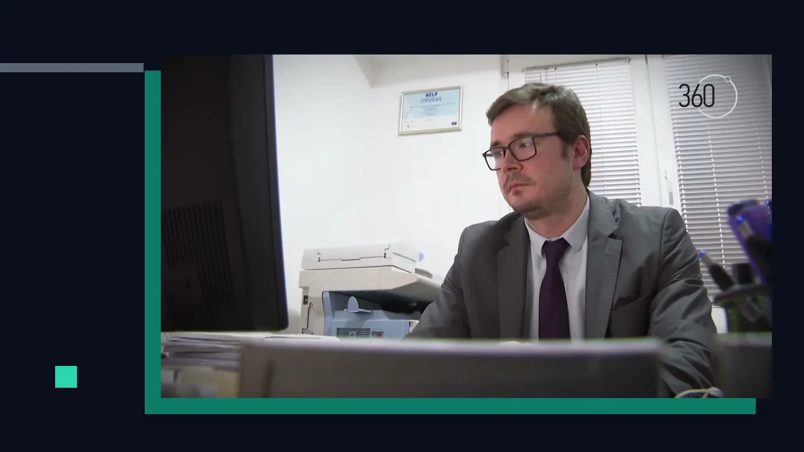

Во медиумите
(ВИДЕО) Измина законскиот рок, а Арсовска не го тужеше СДСМ за наводите за бугарско државјанство
Пренесено од: 360 степени360 stepeni (360stepeni.mk)360 stepeni (360stepeni.mk) ↗

Во налетот на прес-конференциите на СДСМ во кампањата за локалните избори, Арсовска негираше и повеќепати најави дека вистината (за тврдењата дека има бугарско државјанство) ќе се дознае на суд. Но, измина законскиот рок, а никој во СДСМ нема добиено тужба за навреда или клевета. Зошто – ја побаравме Арсовска за лично да ја прашаме. Погледнете го видеото
Поминаа три месеци од најавата на Данела Арсовска дека соодветно ќе возврати на наводите од СДСМ дека е бугарска државјанка.
„Обвинувањата за мене и за моето семејство, за наводно бугарско државјанство, се чиста лага и се последица на стравот на овие политичари. Верувајте ми, јас од прва до последна работа во законскиот рок ќе си поднесам тужби и за истото има да одговараат на еден или на друг начин“, изјави Данела Арсовска на 27 октомври, од позиција на кандидатка за градоначалничка на Скопје.
Потсетување доби неодамна во телевизиско интервју.
„новинар: До каде е тужбата против СДСМ во врска со информациите кои излегоа во текот на кампањата дека имате и бугарско државјанство?
Дел од постапките се покренати. За дел од постапките, сега во овој момент, се собираат информациите и тимот работи. Јас верувам дека ќе имам една, така, убава завршница на сите овие постапки.
новинар: Ќе имате една или повеќе тужби?
Повеќе да“, изјави градоначалничката на Скопје во гостување на ТВ 21 на 14 јануари 2021.
Но, никој во СДСМ не добил тужба за прес-конференциите од кампањата за локалните избори.
„Нема пристигнато никаква тужба по тој основ. Не го спориме двојното државјанство, тоа е законско право, секако, туку неискрениот пристап којшто Даниела Арсовска го имаше постојано во текот на кампањата пред локалните избори“, вели портпаролката на СДСМ, Богданка Кузеска за „360 степени“.
Ако досега не се тужени, нема да бидат ни во иднина, зашто законскиот рок помина.
„Рокот за поднесување тужба за утврдување на одговорност и надомест на штета од навреда и клевета е уреден со член 20 од Законот за граѓанска одговорност за навреда и клевета и тој изнесува 3 месеци од денот кога тужителот дознал или требало да дознае за навредливата или клеветничката изјава и за идентитетот на лицето кое ја предизвикало таа штета“, вели адвокатот Иван Брешковски.
Откако две недели не добивме писмен одговор од Град Скопје на прашањата дали и кого ќе тужи Арсовска за тврдењата дека е и државјанка на Бугарија, отидовме на јавен настан за да побараме одговор лично од неа.
„360°: Зошто не ги тужевте СДСМ за наводите дека имате бугарско државјанство? Тоа беше силна кампања.
За се ќе си има постапки, за се ќе се докаже.
360°: А знаете дека ви измина рокот за поднесување тужба?
Не се грижете, за се си има постапки, преземени се. Дел од нив избегнуваат прием на документите, не се грижете.
360°: Кого тужевте?
Јас реков дека правдата ќе си пристигне и дека ќе си биде реализирано сето она, да си имаат одговорност за сите невистини коишто ги искажаа и коишто континуирано ги истакнуваат.
360°: Кого тужевте, бидејќи велат не добиле тужби?
Ви благодарам, да не го расипуваме денеска денот“, ни одговори Арсовска.
Да се има двојно државјанство не е никаков „грев“, туку законска можност. Секој граѓанин на Република Северна Македонија има право паралелно да е државјанин и на друга држава. Но, егзодусот од земјава кон Европа – преку Бугарија, ја направи историска темата за бугарските државјанства и пасоши, а партиите не еднаш досега се обвинуваа дека луѓе на функции во Македoнија, имаат „резервна татковина“ токму во соседството.
Во екот на кампањата пред вториот круг од локалните избори, владејачкиот СДСМ изнесе информации и презентираше факсимили од документи дека претендентката за градоначалничката позиција во главниот град има и второ државјанство.
„Во удостоверение од бугарското Министерство за правда јасно се наведува дека вицепретседателот на Бугарија, со указ од 2011 и дал на Арсовска бугарско државјанство“, кажа Славјанка Петровска од СДСМ на 27 октомври 2021.
Случајот не остана на една прес-конференција.
„Денеска пред јавноста објавуваме уште еден документ. Ова почитувани, е личната карта на Арсовска издадена од бугарските власти“, истакна Петровска следниот ден.
Како што се приближуваше крајот на изборната кампања, реториката се заоструваше.
„Арсовска е зависна од други држави, за мотиви за кои таа самата лично треба да им ги соопшти на граѓаните“, кажа Петровска.
И се редеа обвинувања.
„Ако Арсовска се крие и лаже за вакви работи, за што се друго лаже?“, портпаролката на СДСМ, Богданка Кузеска, во екот на изборната кампања за вториот круг од локалните избори.
Не изостана реакција ниту од нејзиниот опонент, а се вклучи и тогашниот премиер.
„Јас не навлегувам во тоа кој какво национално чувство има и какво државјанство има и каква лична карта. Тука големиот проблем е што Арсовска лаже“, кажа Петре Шилегов од СДСМ.
„новинар: Тврдите дека таа е граѓанин на Бугарија?
Тврдам, тврдам и јас се верувам дека цела аргументација ќе излезе на површина.
новинар: Политички е проблемот или морален?
Политички, етички, морален, нечесен, како да кажам“, кажа Зоран Заев во гостување во емисијата „Утрински брифинг“.
Арсовска тврдеше дека цел живот се вика Данела и дека СДСМ прикажале нејзина фотографија од училиштен алманах, каде и е згрешено името и е напишана Даниела.
„Треба да се срамат од тоа што го прават. Јас веќе пуштив една тужба, сега овојпат тужбата нема да биде без надомест. Сега тужбата ќе оди со надомест и има сите средства кои ќе ги земам од сите овие безумни лаги да ги донирам“, повтори во предизборието Арсовска.
Наспроти изминатиот законски рок, Арсовска може да реши да тужи, но:
„Доколку тој што ќе биде евентуално тужен докаже дека тужителот знаел дека е навреден и наклеветен и знае од кого, а не го испочитувал рокот од 3 месеци, тогаш, таквата тужба сметам дека треба да се одбие како задоцнета, како застарена“, појаснува адвокатот Брешковски.
Факт е дека ако се направи електронски увид во базата на документи на бугарското МВР, и денес се добива информација дека конкретната лична карта што ја објави СДСМ е валидна.
Лице со име Даниела Арсовска, со матичен број од таа лична карта, фигурираше на списокот на гласачи за последните избори во Бугарија.
Темата стана популарна и во соседството, па софискиот весник „Труд“ објави текст за случајот со наслов „Бугарка е вербално линчувана во Скопје“.
Ова беше и една од темите на средбата на Бугарите од земјава со лидерот на ГЕРБ, Бојко Борисов.
Тоа што не тужи за случајот со бугарското државјанство не значи дека Арсовска решила „да го сврти другиот образ“ и да не се занимава со опонентите. Напротив, во СДСМ добиле една тужба од неа, но на друга тема од предизборието.
„Единствено тужба што партијата ја примила е пратеникот Дарко Каевски, кој исто така пред локалните избори одржа прес-конференција во којашто ја информира јавноста со точни информации кои го потврдуваат лошото менаџирање на Данела Арсовска во салата ’Расадник’ во Кисела Вода. Она што е интересно во овааа апсурдна тужба е дека Арсовска не го проблематизира делот за кој Каевски информира, туку дека таа е кандидат за градоначалник од редовите на ВМРО-ДПМНЕ“, кажа за „360 степени“, портпаролката на СДСМ, Богданка Кузеска.
Граѓаните, кои ги бираат и уриваат функционерите, изгубија шанса преку судска постапка да ја дознаат вистината за најжешката тема од кампањата за локалните избори – кој лажел, а кој ја зборувал вистината.
Славица Филиповска